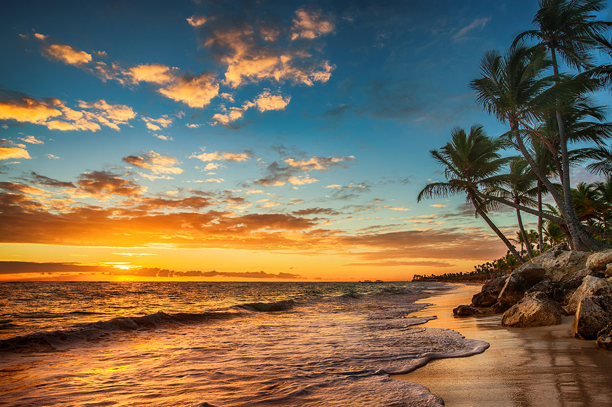
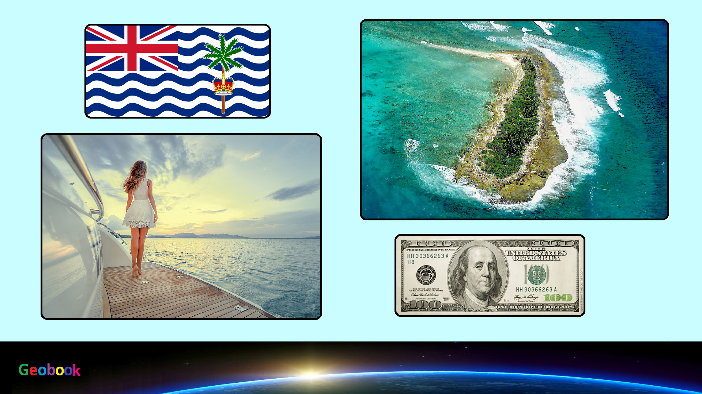

×

British Indian Ocean Territory
Происхождение названия
заморская территория Великобритании, расположенная в Индийском океане южнее Мальдив. Образована 8 ноября 1965 года, в результате выделения островов из Маврикия (архипелаг Чагос) и Сейшельских Островов в отдельную заморскую территорию.
Отделённые от Сейшельских Островов территории были возвращены в состав Сейшел в 1976 году, таким образом в составе Британской Территории в Индийском Океане остался только архипелаг Чагос. Его удержание Великобританией не признаётся международным сообществом; в документах ООН архипелаг фигурирует как часть Маврикия, согласно административному делению которого он входит во Внешние острова Маврикия.
История
Остров Диего-Гарсия был открыт в 1512 году Педру ди Машкареньяшем, который назвал её островом Дом Гарсии. Права на территорию предъявила Португалия, однако колонизирована она не была. В 1559 году название впервые появилось на карте. 23 сентября 1721 года права на управление территорией предъявила Франция, планировавшая включить его в состав колонии Маврикий. В январе 1745 года состоялась первая официально зарегистрированная высадка на остров матросов с британского корабля Pelham. В 1768 году на острове высадился капитан I ранга — француз Марион-Дюфрен. В 1785 году на острове было основано первое французское поселение. С 27 апреля по октябрь 1786 года права на управление островами Чагос и Диего-Гарсия оспаривала Великобритания. В том же году они были аннексированы Францией, которая, в свою очередь, основала на островах кокосовые плантации, кокосы с которых позже использовались при производстве копры. Для работы на плантациях на Чагос вывозились рабы из Африки. 17 мая 1810 года острова вошли в состав британской колонии Сейшельские острова. 30 мая 1814 года в Парижском договоре была закреплена принадлежность островов Великобритании. 16 ноября 2016 года МИД Великобритании подтвердил действие запрета на возвращение коренных жителей на архипелаг.
Правительство и политика
На данный момент действующий королева страны — Елизавета II (с 6 февраля 1952).
Данные: Дата рождения 21 апреля 1926. Место рождения Мейфэр, Лондон, Великобритания. Супруг Филипп Маунтбеттен. Дети Чарльз, принц Уэльский, Анна, принцесса Великобритании, Эндрю, герцог Йоркский и Эдуард, граф Уэссекский.
Праздники
| Дата | Праздник | Примечание |
|---|
| 1 января | Новый год | Начало календарного года |
| 26 декабря | День Дароприношения | День Дароприношения |
| 25 декабря | Рождество | Празднование Рождества |
____
